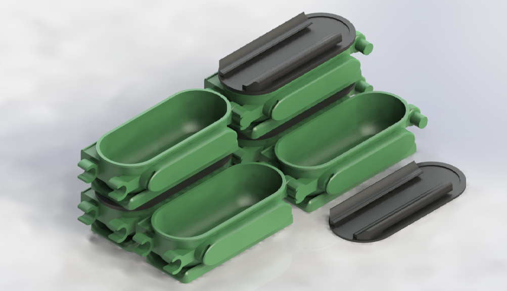

QUE ES QOOD?
Innovación
Qood es un sistema de reutilización de envoltorios de comida para llevar con un envase propio muy innovador. Mediante tuppers modulares buscamos sustituir el plástico, papel y otros materiales desechables con los que se empaqueta la comida. ¿Nuestro objetivo? Eliminar totalmente este tipo de residuo que ahora se encuentra en alza debido al incremento de la demanda que con la pandemia está experimentando el encargo de comida. Nuestro tupper particular, Qood, tiene un sistema de encajes que permite el almacenamiento de estos de forma modular, eficiente y optimizada. El cliente recibe su comida en un Qood y lo devuelve depositándolo en un tanque con contraprestación económica. Finalmente se recoge, se lava y se devuelve al restaurante.

En términos sociales Qood pretende cambiar el hábito que hay en la sociedad de consumir residuos de un solo uso, por una práctica más ecológico y circular.
De esta forma también sumamos al impacto social a un sector especialmente perjudicado por la pandemia como es la hostelería. Qood permitirá que la restauración se sume a la revolución verde, al conseguir la continuidad de su actividad sin la producción de basura de un solo uso.
TIPOS DE QOODS
Existen difernetes tipos de envases dependiendo de la comida contenida
Pulsa en la imagen para ver su función
DEVOLVER QOOD
Puedes devolver tus qoods en qualquier contenedor indicado en el mapa
Como devolver el qood?
- Dirigete a qualquier contenedor de los disponibles en el mapa
- Asegurate de que tu envase tiene la tapa correctamente insertada
- En el contenedor de devolución, pulsa el botón: DEVOLVER QOOD
- Introduce el QOOD por la abertura indicada
- Listo, el importe a devolver ya se le ha ingresado en su cuenta